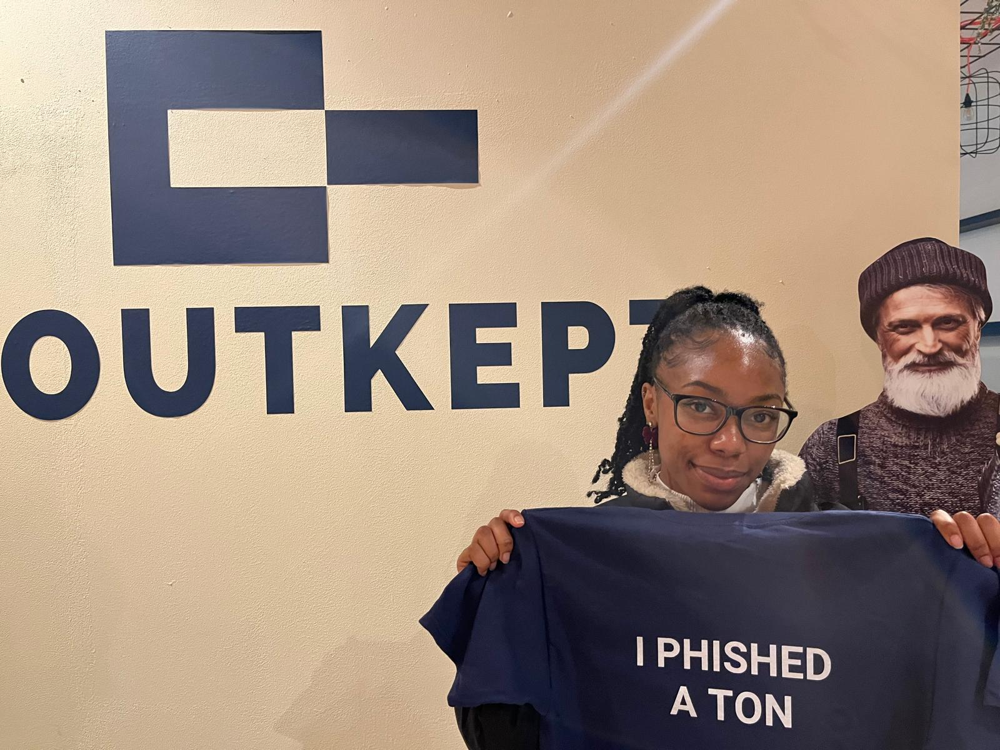

Event type: Cybersecurity hackathon
Organisation: Outkept
Result: First Place
Topic: Phishing awareness and cybersecurity

For this hackathon, I created a vlog documenting my experience and reflection.
The Outkept Phishathon was a cybersecurity-focused hackathon that gave me the opportunity to apply my knowledge in a practical and competitive environment. Since phishing remains one of the most common attack methods used against organisations and individuals, this event was directly connected to my cybersecurity studies and interests.
During the hackathon, I explored how phishing attacks are created, how users can be manipulated, and how awareness plays an important role in cyber defence. What stood out to me was that cybersecurity is not only about technical tools, but also about communication, behaviour and understanding how people make decisions online.
The event challenged me to think from both an attacker’s and defender’s perspective. This helped me better understand why phishing campaigns can be effective and why clear security awareness training is necessary. It also made me reflect on how important it is to present security information in a way that people can actually understand and remember.
Winning first place was a proud moment for me, but the most valuable part of the experience was the learning process. The Phishathon strengthened my confidence, improved my ability to work under pressure and showed me how practical cybersecurity challenges can connect technical knowledge with creativity.
Overall, this hackathon was a meaningful experience because it combined cybersecurity, awareness, communication and teamwork. It reinforced my interest in security and reminded me that effective cyber defence depends on both technology and people.